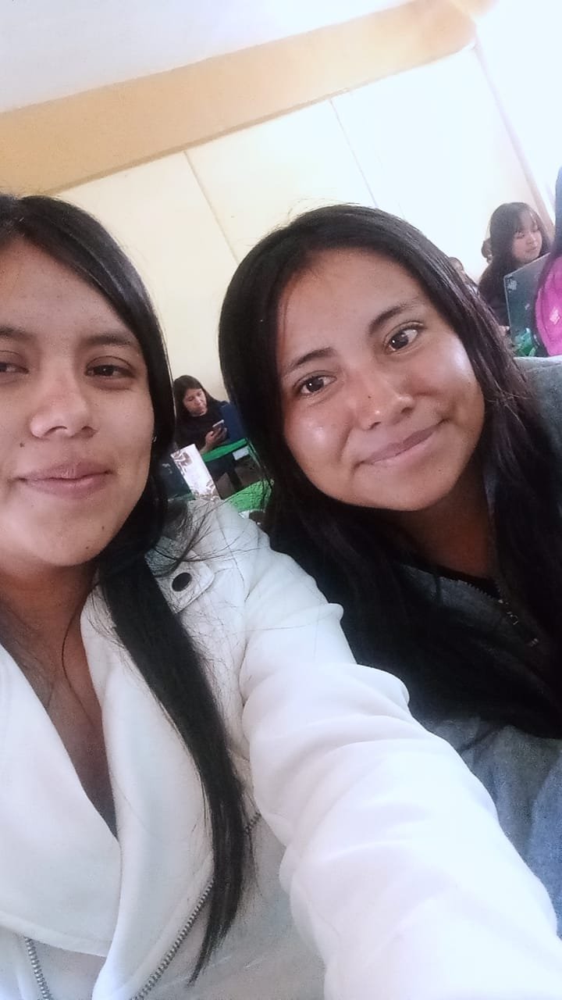

HOLA SOMOS JANETH Y YURIDIA BIENVENIDOS A NUESTRA PRIMERA PAGINA WEB

| Cualidades; |
Defectos; |
Cualidades; |
Defectos; |
| alegre |
irresponsable |
empatica |
enojada |
| creativa |
terca |
paciente |
indecisa |
| paciente |
dramatica |
divertida |
sarcastica |
| materialista |
impulsiva |
optimista |
manipuladora |
| extrovertida |
inpuntual |
perfeccionista |
mal humorada |
| entusiasta |
indecisa |
creativa |
inpuntual |
| agradecida |
dependiente |
optimista |
impaciente |
yuridia sanchez gonzalez ,soy de san juan de los jarros atlacomulco tengo 20 anos me indetifico como una persona alegre me encuentro estudiando en la UPN acambay,estoy cursando el quinto semestre de pedagogia y estoy creando mi primer sitio web en la materia de habilidades ,mi comida favorita son los chiles rellenos ,mi familia esta conformada por mis padres israel sanchez escobar .mi madre ma.teresa gonzalez gonzalez .mi hermano alexis sanchez gonzalez y yo yuridia sanchez gonzalez nos gutaz el futbol a toda mi famila tanto que cada domingo tenemos un equipo somo amables y nos gusta ayuda a los demas .
JY
Hola me Janeth Aniceto Reyes soy de San Jose del Tunal Estado de Mexico tengo 20 años me encuentro estudiando en la UPN acambay,estoy cursando el quinto semestre de dde la Licenciatura en Pedagogia y estoy creando mi primer sitio web en la materia de habilidades digitales mi familia esta construida por 8 integrantes mi papa Teodoro Emiliano Aniceto Castillo y mi mamá Luisa reyes eleuterio tengo 5 hermanos y yo soy la mas chuiquita mi comida favorita es la pechuga empanizada mis postres que me gustan mucho son las gomitas las fresas con crema los elotes y me gusta la sandia la tuna y las lichis y mi color favorito es el verde me considero una persona muy alegre y muy sociables cuando me caen bien por que cuando no pues no ,no soporta a la gente soy muy enojona y me enoja mucho las personas muy irresponsables me estresa que las personas no hagan nada me caen muy mal las personas ,son contadas las que me pueden caer bien y no me gusta que me molesten cuando estoy haciendo cosas